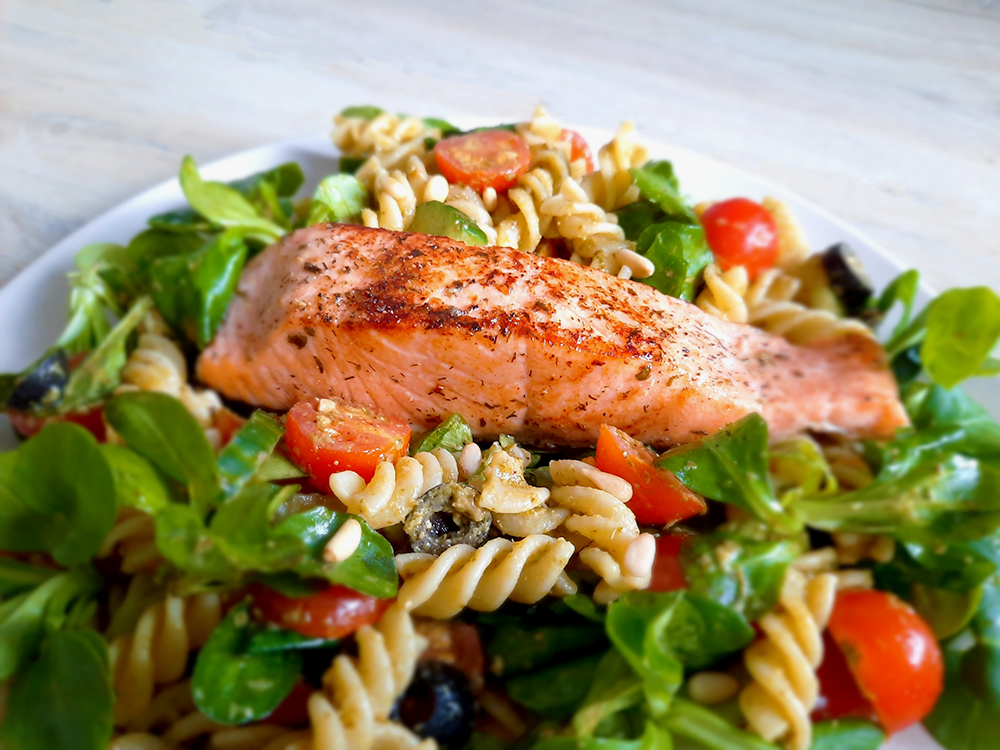

hawaiiaanse poké bowl

maki sushi

avocado salade

bieten carpaccio

amerikaanse caesar salade

koreaanse bibimbap

falafelwrap

kapsalon

italiaanse caponata

chili sin carne met guacamole

chorizosoep

zalm met pastasalade

Bereidingsduur: 20 minuten
Aantal personen: 2
Ingrediënten:
2 stuks zalmfilet met huid
75 gram veldsla
250 gram pasta
0,25 stuks komkommer
200 gram cherry tomaten
15 olijven
0,5 citroen
2 handjes pijnboompitten
naar smaak pesto
naar smaak viskruiden
naar smaak peper
2 stuks zalmfilet met huid
75 gram veldsla
250 gram pasta
0,25 stuks komkommer
200 gram cherry tomaten
15 olijven
0,5 citroen
2 handjes pijnboompitten
naar smaak pesto
naar smaak viskruiden
naar smaak peper
Instructies:
1. Kook de pasta en snijd ondertussen de komkommer in kwartschijfjes en de tomaatjes door de helft. Kruid ondertussen de vis met peper en viskruiden.
2. Bak de vis enkele minuten en breng op smaak met wat citroensap.
3. Meng de sla, pasta en groenten in een grote kom en breng op smaak met pesto.
4. Opscheppen, leg de vis erop, pijnboompitjes erop en smullen maar!
1. Kook de pasta en snijd ondertussen de komkommer in kwartschijfjes en de tomaatjes door de helft. Kruid ondertussen de vis met peper en viskruiden.
2. Bak de vis enkele minuten en breng op smaak met wat citroensap.
3. Meng de sla, pasta en groenten in een grote kom en breng op smaak met pesto.
4. Opscheppen, leg de vis erop, pijnboompitjes erop en smullen maar!